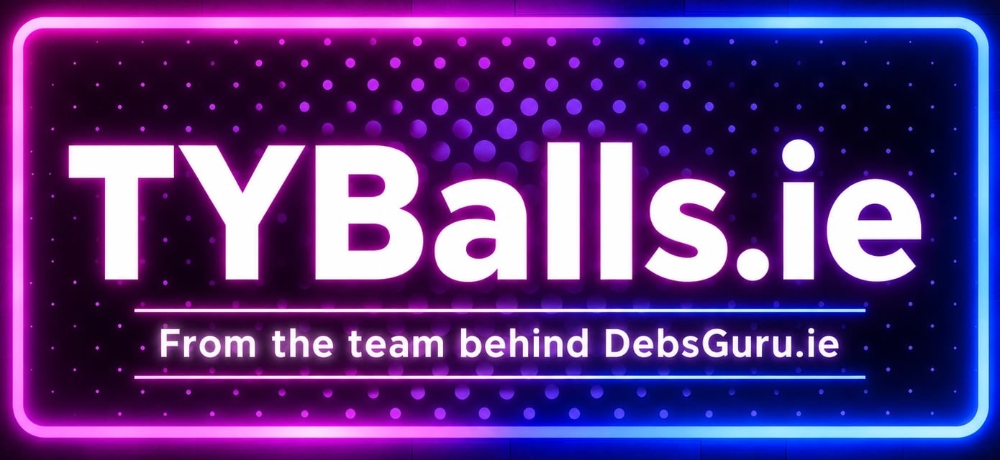

Brand and website
A new visual system based on the supplied logo, with consistent colour, typography, motion and responsive layouts.

Project delivery report
A concise summary of the website, enquiry journey, search setup and day-to-day operation.
Project summary
TYBalls.ie is now a complete, mobile-first website for Transition Year Ball enquiries in Ireland. Student committees, parents and schools can understand the service, see how the planning process works and send DebsGuru the information needed to prepare a proposal.
A new visual system based on the supplied logo, with consistent colour, typography, motion and responsive layouts.
Eight core pages explain the event, planning process, costs, venues, committee role, parent guidance and enquiry route.
Photography and video are presented in mobile-friendly galleries and swipeable sections.
Completed forms are saved in the admin area and sent to the DebsGuru email address.
Google Analytics, Search Console, sitemap, page descriptions, social cards and structured data are connected.
The site has bot protection, HTTPS, privacy controls, daily backups, monitoring and an area for publishing venues and event stories.
How an enquiry moves
Google, social or direct link
Format, planning and guidance
School, date and guest estimate
Admin record and email
Review and proposal
Search focus
The main website, mobile experience, forms, email delivery, analytics, search setup, security and backups are working. The next step is regular venue and event content from DebsGuru.
Отчёт по проекту
Краткий итог по сайту, обработке заявок, поисковому продвижению и ежедневной работе.
Итог проекта
TYBalls.ie теперь является полноценным сайтом для заявок на организацию Transition Year Ball в Ирландии. Ученические комитеты, родители и школы могут понять формат услуги, ознакомиться с процессом организации и отправить DebsGuru данные для подготовки предложения.
Новая визуальная система на основе логотипа клиента: единая палитра, типографика, анимация и адаптивная разметка.
Восемь основных страниц объясняют формат мероприятия, процесс, стоимость, площадки, роль комитета и работу с родителями.
Фото и видео мероприятий оформлены в мобильные галереи и блоки с горизонтальным листанием.
Заполненные формы сохраняются в административной панели и отправляются на email DebsGuru.
Подключены Google Analytics, Search Console, sitemap, описания страниц, социальные карточки и структурированные данные.
Работают защита от ботов, HTTPS, privacy-настройки, ежедневные копии, мониторинг и публикация площадок и историй.
Как проходит заявка
Google, соцсети или ссылка
Формат, процесс и условия
Школа, дата и гости
Панель и email
Проверка и предложение
Направления SEO
Основной сайт, мобильная версия, формы, письма, аналитика, SEO, защита и резервное копирование работают. Следующий этап: регулярно добавлять площадки и реальные истории DebsGuru.